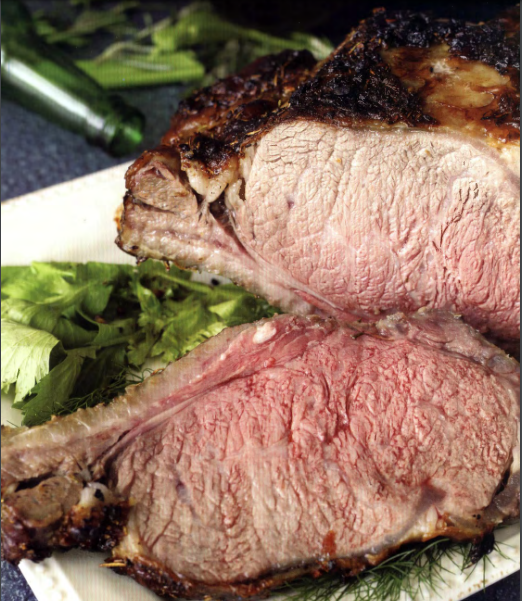

The captain's feast

We encourage all vault dwellers to celebrate the holiday season in any way
they see fit, but humbly request that a roast be a part of that celebration.
This roast is so good, we know that after giving this recipe a try once, you
won 't need any coercion to make it again
Ingredients
- 6 to 8 pounds bone-in prime rib B (Brahmin ribs did the tick here)
- 2 tea espoons salt
- 1 tablespoon dried rosemary
- 8 garlic cloves, finely grated
- Pepper
- 3 celery ribs, cut into large chunks
- 1 medium fennel bulb, cut into large chunks
- 1 medium yellow onion, cut into arge chunks
- 3 sprigs fresh rosemary
- S sprigs fresh thyme
Recipe
- Two days before you plan on roasting the prime rib, combine the salt, rosemary, and garlic in a bowl.
Rub the mixed seasoning over the entire prime rib. Lay the meat on a baking sheet fitted with a rack and
place in the refrigerator uncovered . Allow the prime rib to rest for at least 48 hours and up to 96 hours.
- Take the prime rib out of the refrigerator for at least one hour before it goes into the oven and allow it to come to room temperature. Adjust an oven rack to the middle-lower position. Preheat the oven to 250 ° F.
- Take a deep baking dish with a roasting rack inserted and fill the bottom of the baking dish with celery,
fennel, onion, rosemary, and thyme. Heavily season the prime rib with pepper. Lay the prime rib, fat
side up, on the roasting rack. Place the meat in the oven and roast until the prime rib reaches the desired
internal temperature: 130 ° F for medium-rare, 3 to 3 ½ hours; 135 ° F for medium, 3 ½ to 4 hours.
- 4. Remove the prime rib from the oven, loosely cover with aluminum foil, and let rest for 45 minutes.
Increase the oven temperature to 500 ° F. Move the oven rack up to the top-middle of your oven .
Remove the aluminum foil from the prime rib and place in the oven. Cook until the fat begins to crisp
up, about 8 to 10 minutes. Remove the roast from the oven and place on a cutting board. Remove the
bone and slice the meat into ½ -to-¾-inch-thick pieces and serve .
Home page